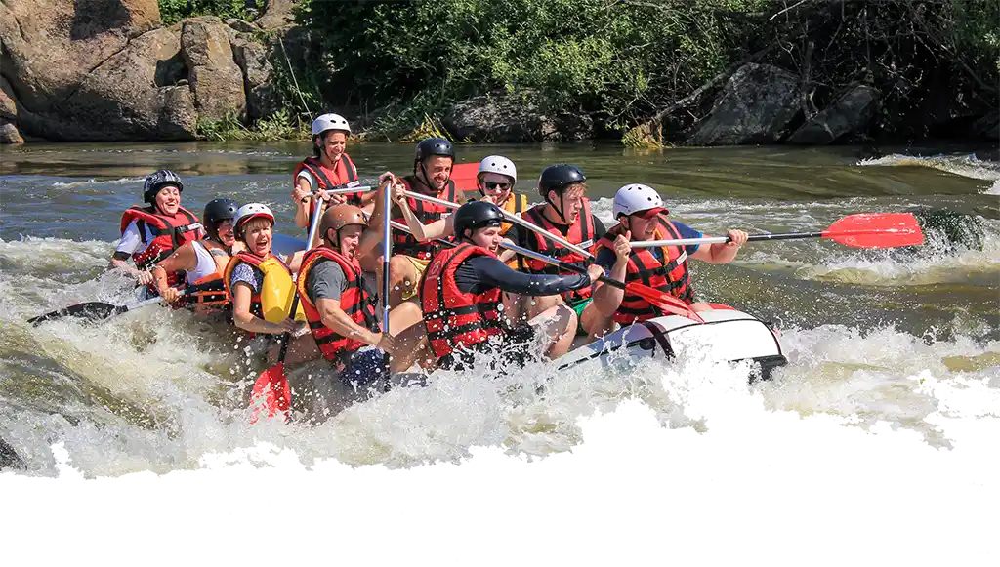
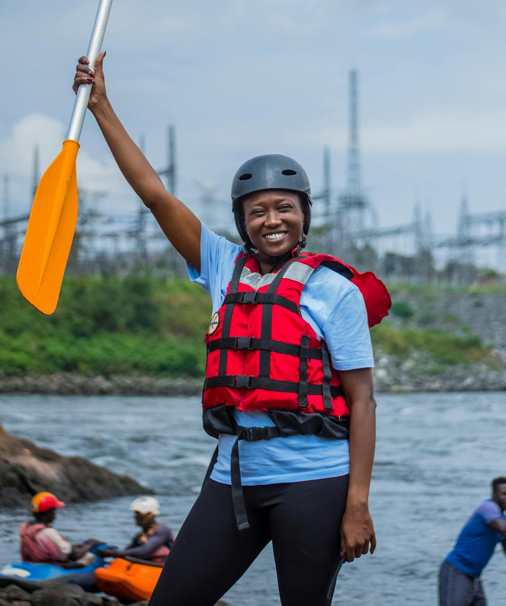

We are a premier rafting company dedicated to providing unforgettable river experiences. Our team of experienced guides ensures safety and fun for all our guests. We pride ourselves on our commitment to environmental sustainability and community engagement.


Down the River Rafting Company
History
Down the River was founded with one clear mission: to share the thrill, beauty, and freedom of the river with everyone who dares to paddle along. What began as a small group of river enthusiasts has grown into a passionate team dedicated to creating unforgettable rafting adventures. From our first trips, we knew the river had something special to teach—about teamwork, about respecting nature, and about embracing the unexpected turns along the way. Over the years, Down the River has guided countless adventurers through calm waters, exciting rapids, and breathtaking landscapes, always with a commitment to safety and unforgettable experiences.
Today, Down the River is proud to be more than a rafting company—we are a community of explorers, nature lovers, and storytellers. Every trip down the river is not just about reaching the end, but about the journey, the laughter, and the stories made along the way.